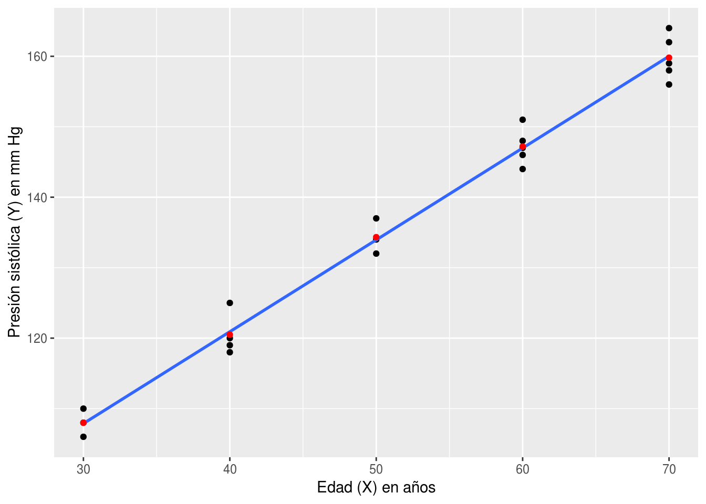

Capítulo 17 Regresión
En las ciencias naturales es usual querer explicar una variable con otras. Las variables que se quieren explicar son las variables dependientes y las que se usan para explicar son las llamadas variables explicatorias o también independientes. A estos modelos se los conoce como modelos de regresión. Aunque las variables estén relacionadas esto no implica que haya una relación causal entre ellas. Sin un modelo causal que explique la manera que las variables se relación se está incurriendo una falacia del tipo cum hoc ergo propter hoc. Por ejemplo, en la Figura 17.1 se muestra que la relación entre los limones frescos importados desde México (ton) y tasa de mortalidad total en autopistas de EE.UU. Según esta regresión al ¡aumentar la importación de disminuye la tasa de mortalidad! Este resultado carece de lógica ya que no hay una forma en que la importación de limones afecte la mortalidad. Por este motivo hay que ser cuidadoso en cuanto a las conclusiones que se realizan con los resultados.
(ref:regresion-espuria) Ejemplo de regresión espuria. Limones frescos importados desde México (ton) y tasa de mortalidad total en autopistas de EE.UU.
Figura 17.1: (ref:regresion-espuria)
17.1 Regresión Lineal Simple
La regresión lineal simple se da cuando hay una variable aleatoria con distribución normal y solo una variable predictora. La varible predictora no es una variable aleatoria, sino que puede ser modificada por el investigador. El objetivo de esta técnica es obtener una ecuación lineal que explique el cambio de la variable aleatoria según el cambio de la variable predictora:
\[\begin{equation} Y_i = \beta_0 + \beta_1 X_i \tag{17.1} \end{equation}\]Por ejemplo, el se tiene la edad y la longitud de alas de gorriones de varias edades en la Tabla ??. La edad es la variable independiente y la longitud de ala es la variable dependiente. Se busca ajustar un modelo como en el da la Ecuación (17.1). En la Figura 17.2 la recta que mejor ajusta a esto datos en azul. Sin embargo, el ajuste no es perfecto. La diferencia entre el valor ajustado o predicho y el valor observado es el error que se comete. Ese error se simboliza con la letra griega epsilon y debe ser incluido en el modelo:
\[\begin{equation} Y_i = \beta_0 + \beta_1 X_i + \epsilon_i \tag{17.2} \end{equation}\]Se asume que \(\epsilon_i\sim N\left ( 0, \sigma^2 \right )\) y por lo tanto \(\sum \epsilon_i = 0\). El método que se usa para encontrar los estimadores de los \(\beta_i\) consiste en minimizar el cuadrado de los errores. Por eso, el método se lo conoce como mínimos cuadrados o mínimos cuadrados ordinarios. Afortunadamente se pueden resolver de manera analítica por las siguientes ecuaciones:
\[\begin{equation} \begin{aligned} b_1 &= \frac{\sum(X_i-\overline{X})(Y_i-\overline{Y})}{\sum (X_i-\overline{X})^{2}}=\frac{\sum X_iY_i-\frac{\left (\sum X_i\right)\left ( \sum Y_i\right )}{n}}{\sum X_i^2-\frac{\left (\sum X_i \right )^2}{n}}\\ b_0 &= \overline{Y} - b_1\overline{X} \end{aligned} \tag{17.3} \end{equation}\]Para facilitar las formulas y hacerlas más compactas definimos:
\[\begin{equation} \begin{aligned} \sum y^2 &= \sum \left (Y_i - \overline{Y} \right )^2\\ \sum x^2 &= \sum \left (X_i - \overline{X} \right )^2\\ \sum xy &= \sum \left (X_i - \overline{X} \right )\left (Y_i - \overline{Y} \right ) \end{aligned} \end{equation}\]| Edad | Longitud |
|---|---|
| 3 | 1.4 |
| 4 | 1.5 |
| 5 | 2.2 |
| 6 | 2.4 |
| 8 | 3.1 |
| 9 | 3.2 |
| 10 | 3.2 |
| 11 | 3.9 |
| 12 | 4.1 |
| 14 | 4.7 |
| 15 | 4.5 |
| 16 | 5.2 |
| 17 | 5.0 |
(ref:gorriones-grafico) Gráfico de dispersión de edad en días y longitud de ala en centímetros de 13 gorriones. En azul línea de regresión estimada con mínimos cuadrados ordinarios. En rojo el error cometido por la regresión entre los valores estimados y los valores observados.

Figura 17.2: (ref:gorriones-grafico)
Una vez que están determinados los \(\beta_i\) es necesario determinar si son signficativos. Es decir, diferentes de cero. El \(\beta_1\) puede ser muy grande (e.g. 100) pero si la varianza asociada a este número es muy grande puede que no sea significativamente distinto de cero. Existen dos estadísticos que permiten probar la significancia de \(\beta_1\).
El primero es un estadístico F que se calcula a partir de una tabla de análisis de la varianza (ANOVA):
\[ F = \frac{CM_{regresion}}{CM_{residual}} \]
| Fuente de Variación | GL | Suma de Cuadrados (SC) | Cuadrados Medios (CM) |
|---|---|---|---|
| Regresión | \(1\) | \(\frac{\left (\sum xy \right )^2}{\sum x^2}\) | \(\frac{SC_{regresion}}{GL_{regresion}}\) |
| Residual | \(n-2\) | \(SC_{total}-SC_{regresion}\) | \(\frac{SC_{residual}}{GL_{residual}}\) |
| Total | \(n-1\) | \(\sum y^2\) |
Este estadístico F bajo la hipótesis nula \(H_0: \beta_1 = 0\) se distribuye como \(F_{1;n-2}\). Entonces se compara con esa distribución y si el estadístico es mayor que el valor crítico al \(\alpha\) especificado o si la probabilidad es de un valor mayor a estadístico es menor a \(\alpha\) entonces se rechaza \(H_0\).
Por ejemplo, con los datos de la tabla 17.1:
| Fuente de Variación | GL | Suma de Cuadrados (SC) | Cuadrados Medios (CM) | F | P(>F) |
|---|---|---|---|---|---|
| Regresión | 1 | 19.1322137 | 19.1322137 | 401.0875 | 0 |
| Residual | 11 | 0.5247093 | 0.0477008 | ||
| Total | 12 | 19.6569231 |
La otra forma de hacer esta prueba es usando el estadístico t:
\[ t = \frac{b_1 - \beta_1}{s_{b1}} \tag{17.4} \]
En el caso de \(H_0: \beta_1 = 0\) es claro que ese el valor que debe tomar \(\beta_1\) en la Ecuación (17.4). Por otro lado, esta forma de probar la significancia del estimador \(b_1\) tiene la ventaja de poder probar a una cola izquierda o derecha y con distintos valores de \(\beta_1\) (e.g. 1, 3. 100, etc.).
La varianza de \(b_1\) se calcula como:
\[ s_b^2=\frac{s^2_{YX}}{\sum x^2} \]
Donde el estimador de \(s^2_{YX}\) es el \(CM_{residual}\) en la tabla de anovo.
El coeficiente de determinación \(r^2\) es igual a la proporción de la varianza de Y explicada por la regresion:
\[ r^2 = \frac{SC_{regresion}}{SC{total}} \]
La interpretación de la función de regresión es que \(\beta_0\) es el valor que toma \(Y\) cuando \(X=0\). No siempre tiene sentido biológico este parámetro. Por ejemplo, si la variable \(X\) es el peso de un animal, ¡no existe un animal con peso 0!. Por otro lado, en el caso de los gorriones este valor representa la longitud media del ala de un gorrión al nacer.
La interpretación de \(\beta_1\) es cuanto aumenta (o disminuye) \(Y\) por cada unidad de \(X\).
17.1.1 Intervalos de confianza
El intervalo de confianza para \(b_1\) es:
\[ b_1 \pm t_{\alpha(2);n-2} s_b \]
El intervalo de confianza para cada \(Y\) es distinto que el de para una media. Debido a que la pendiente \(b_1\) tiene varianza hace que los intervalos de confianza de \(Y\) sean mayores en los extremos que en el centro. Podemos imaginarlo como un subibaja donde el punto donde está sostenido es igual a \(\overline{X}\). Por lo tanto la varianza de \(\hat{Y}\) aumenta a medida que se aleja de \(\overline{X}\)
\[ S_{\hat{Y}}= \sqrt{S^2_{YX}\left[ \frac{1}{n} + \frac{\left( X_i - \overline{X} \right)^2}{\sum x^2} \right ]} \] Luego se construye normalmente como cualquier otro intervalo de confianza:
\[ \hat Y \pm t_{\alpha(2);n-2}S_{\hat Y} \]
En cambio, el intervalo de predicción para un nuevo \(Y\) depende de la cantidad de nuevas estimaciones que se quieran predecir:
\[ (S_{\hat{Y}})_m= \sqrt{S^2_{YX}\left[\frac{1}{m} + \frac{1}{n} + \frac{\left( X_i - \overline{X} \right)^2}{\sum x^2} \right ]} \]
Donde \(m\) es el número de nuevas predicciones en en un mismo \(X_i\).
17.2 Regresión con Replicación
La regresión lineal simple vista anteriormente es para cuando solo hay una observación por cada \(X_i\). Cuando tenemos varias observaciones por cada \(X_i\) es posible probar la hipótesis sobre la linealidad de los datos. Esto es posible de probar porque cada observación proviene de una distribución normal con media \(\beta_0 + \beta_1X\). Por lo tanto, la media de las réplicas de cada \(X_i\) debería coincidir con el valor de \(\hat{Y}\) de la regresión. Por ejemplo, se tienen mediciones de la presión sistólica de hombres de diferentes edades, con varias mediciones para la misma edad en la Tabla @ref(tab:presión-sistolica). En la Figura ?? se graficaron estos datos. Además, se añadió la recta de regresión estimada.
| edad | presion |
|---|---|
| 30 | 108, 110, 106 |
| 40 | 125, 120, 118, 119 |
| 50 | 132, 137, 134 |
| 60 | 148, 151, 146, 147, 144 |
| 70 | 162, 156, 164, 158, 159 |

Entonces, si tenemos réplicas por cada X es posible estimar las desviaciones de la linealidad. La hipótesis nula es que la población es linear vs la alternativa que no es linear:
\[ H_0 : \text{la población es linear}\\ H_a: \text{la población no es linear} \]
La forma de poner a prueba esta hipótesis es mediante un estadístico F.
\[ F = \frac{CM_{desviaciones}}{CM_{dentro}} \]
La varianza total puede ser divididad entre la varianza residual o dentro de los grupos, y la varianza entre los grupos que además puede ser divida entre la que explicada por la regresión linear y la que no explicada por la regresión linear que se asume que es debida a desviaciones de la linealidad.
| Fuente de Variación | GL | Suma de Cuadrados (SC) | Cuadrados Medios (CM) |
|---|---|---|---|
| Entre grupos | \(I - 1\) | \(\sum\frac{\left(\sum Y_ij\right)^2}{n_i} - \frac{\left (\sum\sum Y_ij\right )}{N}\) | |
| Regresión Lineal | \(1\) | \(\frac{\left (\sum xy \right )^2}{\sum x^2}\) | |
| Desviaciones de la linealidad | \(I - 2\) | \(SC_{entre} - SC{regresion}\) | \(\frac{SC_{desviaciones}}{GL_{desviaciones}}\) |
| Dentro de grupos | $N - I $ | \(SC_{total}-SC_{entre}\) | \(\frac{SC_{dentro}}{GL_{dentro}}\) |
| Total | \(N-1\) | \(\sum y^2\) |
El estadístico F sigue una distribución F con I - 2 grados de libertad en el numerador y N-I en el denominador si \(H_0\) es cierta.
| Fuente de Variación | GL | Suma de Cuadrados (SC) | Cuadrados Medios (CM) |
|---|---|---|---|
| Entre grupos | \(4\) | \(6751.93\) | |
| Regresión Lineal | \(1\) | \(6750.29\) | |
| Desviaciones de la linealidad | 3 | \(1.64\) | \(0.55\) |
| Dentro de grupos | \(14\) | \(117.27\) | \(7.82\) |
| Total | \(19\) | \(6869.20\) |
El valor de \(F = \frac{0.55}{7.82} = 0.070 < 1\). Por lo tanto no se rechaza \(H_0\).
Luego podemos proceder y comprobar si la regresión es significativa como se hizo para una regresión lineal simple sin replicas en la sección anterior.
En R es posible poner a prueba la linealidad de forma simple con una prueba de anova. La formula general que se debe utilizar es:
variable_respuesta ~ variable_explicatoria + as.factor(variable_explicatoria)Si no ponemos el segundo término a mano derecha, solo se hará una regresión
lineal. Por eso, se agrega la función as.factor() para que utilice la
segunda variable explicatoria como variable de agrupamiento y no como variable
continua como ya fue utilizada anteriomente. Por ejemplo, para los datos de
presión sistólica:
summary(aov(presion ~ edad + as.factor(edad), data = presion_long))## Df Sum Sq Mean Sq F value Pr(>F)
## edad 1 6750 6750 863.45 1.13e-14 ***
## as.factor(edad) 3 2 1 0.07 0.975
## Residuals 15 117 8
## ---
## Signif. codes: 0 '***' 0.001 '**' 0.01 '*' 0.05 '.' 0.1 ' ' 1El orden de los factores altera el producto. No es lo mismo poner:
variable_respuesta ~ as.factor(variable_explicatoria) + variable_explicatoriaComparase el resultado siguiente con el anterior
summary(aov(presion ~ as.factor(edad) + edad, data = presion_long))## Df Sum Sq Mean Sq F value Pr(>F)
## as.factor(edad) 4 6752 1688.0 215.9 4.62e-13 ***
## Residuals 15 117 7.8
## ---
## Signif. codes: 0 '***' 0.001 '**' 0.01 '*' 0.05 '.' 0.1 ' ' 1¡Y llegaremos a conclusiones totalmente opuestas!
Una vez que no rechazamos la hipotesis de que la población es linear podemos comprobar que la regresion linear es significativa y estimar los parametros.
En el el ejemplo:
\[
b = \frac{\sum xy}{\sum x^2} = \frac{5180}{3975} = 1.3031447 \text{mm Hg/año}\\
a = \overline{Y} - b \overline{X} = 137.2- 1.3031447 52.5 = 68.7849057
\]
En R es posible ajustar un modelo lineal con la función lm() que funciona
de forma similar a aov() (de hecho son lo mismo con cambios estéticos a
la forma de presentar los datos). Necesita una fórmula y la ubicación de los
datos.
El resultado puedo verse con la función summary() y puede verse abajo.
summary(lm(presion ~ edad, data = presion_long))##
## Call:
## lm(formula = presion ~ edad, data = presion_long)
##
## Residuals:
## Min 1Q Median 3Q Max
## -4.0050 -1.9186 -0.4421 2.0264 4.0893
##
## Coefficients:
## Estimate Std. Error t value Pr(>|t|)
## (Intercept) 68.78491 2.21607 31.04 <2e-16 ***
## edad 1.30314 0.04077 31.97 <2e-16 ***
## ---
## Signif. codes: 0 '***' 0.001 '**' 0.01 '*' 0.05 '.' 0.1 ' ' 1
##
## Residual standard error: 2.57 on 18 degrees of freedom
## Multiple R-squared: 0.9827, Adjusted R-squared: 0.9817
## F-statistic: 1022 on 1 and 18 DF, p-value: < 2.2e-16summary.aov(lm(presion ~ edad, data = presion_long))## Df Sum Sq Mean Sq F value Pr(>F)
## edad 1 6750 6750 1022 <2e-16 ***
## Residuals 18 119 7
## ---
## Signif. codes: 0 '***' 0.001 '**' 0.01 '*' 0.05 '.' 0.1 ' ' 1Da casi toda la información necesaria.
Callda información de como fue ejecutadolm().Residualsun breve resumen de los residuales, mínimo, primer cuartil, mediana, tercer cuartila y máximo.Coefficientslos coeficientes de los parámetros del modelo.(Intercept)es la ordenada al origen y los siguientes coeficientes corresponden a la pendiente de la variable nombrada. Indica el valor estimado, su error estándar, el valor del estadístico t y la probabilidad de un valor mayor.- Abajo da también información del error estándar del residual. El r2 múltiple y ajustado. Y el estadístico F con sus grados de libertad y su valor de una probabilidad mayor.
17.3 Transformaciones para corregir la falta de linealidad
Muchas veces las relaciones entre \(X\) e \(Y\) no son lineales. Anteriormente, vimos que se podía transformar \(Y\) para cumplir los supuestos de normalidad y homocedasticidad. Ahora veremos que también se puede transformar \(X\) para cumplir con la linealidad. En general, la transformación de \(X\) no cambia la distribución de \(Y\) por lo que puede trasnformarse el primero con impunidad.
Sin embargo, hay que tener cuidado con la transformaciones de \(Y\). No deben hacerse en caso de que sí se cumplan los supuestos ya que se modificaría la distribución de \(Y\) y podrían dejar de cumplir estos supuestos.
| X | Y | s2Y |
|---|---|---|
| 5 | 10.72, 11.22, 11.75, 12.31 | 0.4684667 |
| 10 | 14.13, 14.79, 15.49, 16.22 | 0.8100917 |
| 15 | 18.61, 19.5, 20.4, 21.37 | 1.4051333 |
| 20 | 24.55, 25.7, 26.92, 28.18 | 2.4452250 |
| 25 | 32.36, 33.88, 35.48, 37.15 | 4.2525583 |
| X | Y | s2logY |
|---|---|---|
| 5 | 1.03019, 1.04999, 1.07004, 1.09026 | 0.000668 |
| 10 | 1.15014, 1.16997, 1.19005, 1.21005 | 0.000665 |
| 15 | 1.26975, 1.29003, 1.30963, 1.3298 | 0.000665 |
| 20 | 1.39005, 1.40993, 1.43008, 1.44994 | 0.000665 |
| 25 | 1.51001, 1.52994, 1.54998, 1.56996 | 0.000666 |
17.4 Uso de los Residuales para Comprobar los Supuestos
Incluso si no tenemos réplicas para cada \(X\) es posible comprobar los supuestos mediante el uso de gráficos de residuales. Una de las formas es graficando los residuos vs los valores ajustados. Si hay homocedasticidad y la regresión lineal es un buen modelo de ajuste a nuestros datos obtendremos un gráfico de ajuste como el que se muestra en la Figura 17.3a. En este gráfico, los residuales muestran la misma varianza a lo largo de la valores de \(X\) y están distribuidos de igual manera alrededor del cero.
Si no se cumple el supuesto de homocedasticidad, es decir que hay heterocedaticidad, el gráfico de los residuos se verá como en la Figura 17.3b. En este caso la variabilidad de los residuales aumenta a medida que aumentan los valores predichos. También podría darse el caso inverso, que la varianza disminuya a medida que aumente la media, pero es mucho más raro. Si ocurre el caso de la Figura 17.3c es probable que falte una variable importante a nuestro modelo. Finalmente, si ocurre
Figura 17.3: Gráficos de algunos de los posibles patrones que se pueden detectar al gráficar los residuales vs los valores ajustados.